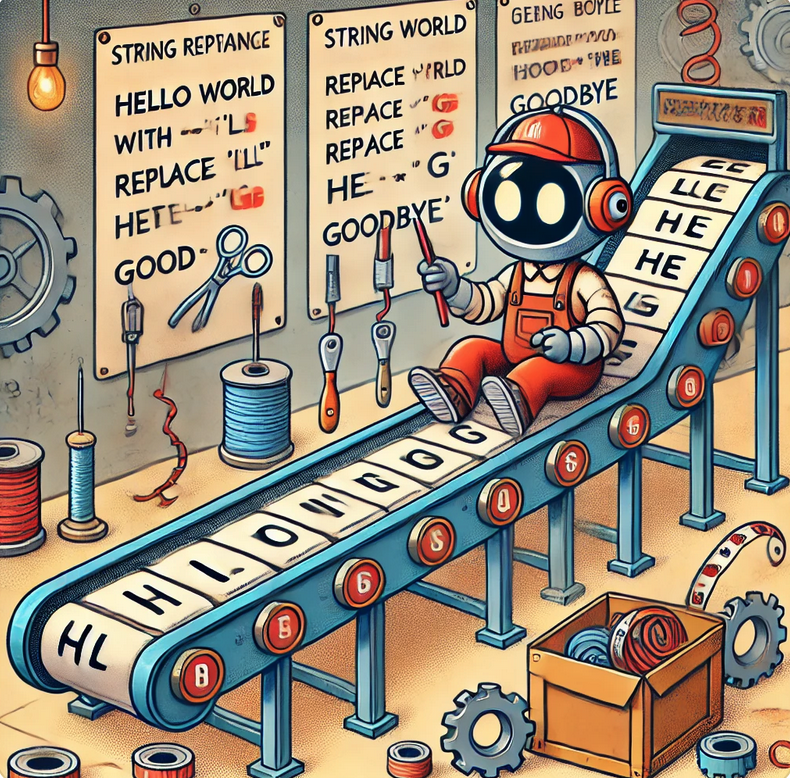

In the bustling city of Textopolis, a quirky coder named Sedrick works at the Central Message Refinery, where every string of text must pass through for cleanup before going public. Sedrick's job? Apply precise edits to a stream of incoming messages, following a strict set of replacement rules. Each edit instructs him to replace the first appearance of one string with another — sometimes adding words, sometimes deleting, and occasionally tweaking just a few characters. With a reputation for never making a typo, Sedrick must apply every change in order and never repeat a replacement. If the target text isn’t there? Move on. If the replacement is empty? Remove the target altogether. Today’s task is one of the trickiest yet. Can you help Sedrick perform his replacements and reveal the final refined message? \section*{Task}
You are given a base string and a list of editing operations. Each operation consists of two strings, s and t. Your job is to replace the first occurrence of string s in the base string with string t.
s does not occur in the string, do nothing.
t can be empty.
C (0 ≤ C ≤ 50) — the number of changes to apply.
2C lines contain the pairs of strings s and t, one pair every two lines. String t may be empty.
Print the final version of the string after applying all the changes.
hello world 4 ll o he g o w rld dbye
goodbye
Content by Fernando Silva and Vanessa Silva (DCC/FCUP), copied from the original website.